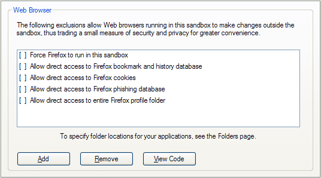

Firefox Tips
Tips Specific to Firefox
Sandboxie Control > Sandbox Settings > Applications > Web Browser > Firefox

Always Run In Sandbox
- Setting: Force Firefox to run in this sandbox
This setting tells Sandboxie to automatically supervise any instance of Firefox as it starts, even if it was not started directly through a Sandboxie facility or command.
Updating Firefox and its Add-ons
In the default configuration, any updates to Firefox or its add-ons will happen only within the sandbox. When the sandbox is deleted, all such updates will be deleted as well. To avoid this problem, you should run Firefox outside the sandbox when you recognize that any updates are available. Let the normal Firefox finish updating, including any necessary restarts of Firefox. Finally, exit Firefox and restart it under Sandboxie.
If Firefox is forced to always run under Sandboxie (as discussed above), use the Disable Forced Programs command to disable forced sandboxing for a duration of several minutes. Then follow the procedure in the preceding paragraph. Finally, use the Disable Forced Programs command again to resume forced sandboxing.
Bookmarks, History and Favorites
- Setting: Allow direct access to Firefox bookmarks and history database
This setting allows Firefox running under Sandboxie to store bookmarks outside the sandbox, so they can persist even after the sandbox is deleted. When this option is not set, bookmarks are stored only in the sandbox, and will be deleted when the sandbox is deleted.
Please note that, starting from Firefox 3, the same file (called places.sqlite) stores both bookmarks and the history of visited sites. Therefore this setting will cause Firefox to also store the history of visited outside the sandbox.
~~One approach to this is to install the PlainOldFavorites add-on, which lets Firefox create and manage Internet Explorer-style Favorites in addition to Mozilla-style bookmarks. Then consult the discussion on favorites in Internet Explorer Tips.~~
Bottom line:
~~* If you don't mind the extra add-on, install PlainOldFavorites to enhance Firefox with Internet Explorer-style favorites, then read the recommendations for handling favorites in Internet Explorer Tips.~~ * If you are happy with Firefox bookmarks, then select this setting.
Cookies
- Setting: Allow direct access to Firefox cookies
This setting allows Firefox running under Sandboxie to store cookies outside the sandbox (in a file called cookies.sqlite), so they can persist even after the sandbox is deleted. When this option is not set, cookies are stored only in the sandbox, and will be deleted when the sandbox is deleted.
An alternative approach is to this setting is to visit your favorite sites once with a normal Firefox, to get these sites to remember you in their cookies. Then switch to a Firefox under Sandboxie, so any new cookies are kept the sandbox until you delete the sandbox.
Bottom line:
- If you regularly delete cookies, and plan to start regularly using Sandboxie, then you can keep this setting unselected, and you will not have to keep regularly deleting cookies.
- If you need web sites that you visit in a sandboxed Firefox to remember you, then select this setting.
Phishing Database
- Setting: Allow direct access to Firefox phishing database
This setting allows Firefox running under Sandboxie to update and maintain the database of phishing web sites (a file called urlclassifier*.sqlite). When this option is not set, then whenever the sandbox is deleted, Firefox might have to spend time to copy the phishing database (potentially a very large file) into the sandbox, and then download updates to the database. The setting is enabled by default.
Bottom line: Keep the setting selected.
Full Profile Access
- Setting: Allow direct access to entire Firefox profile folder
This setting allows Firefox running under Sandboxie to have access to any data file within the entire Firefox profile. This setting includes any other Firefox data file mentioned above, and overrides all other "direct access" setting discussed earlier.
Bottom line: Do not select this setting.
General Tips
Automatic Delete Sandbox
Sandboxie Control > Sandbox Settings > Delete > Invocation

- Setting: Automatically delete contents of sandbox
This setting tells Sandboxie to delete the sandbox whenever all programs in the sandbox stop running.
Highlight Windows of Programs Running Under Sandboxie
Sandboxie Control > Sandbox Settings > Appearance Settings

- Setting: Display a border around the window
This setting tells Sandboxie to draw a color border around windows that belong to programs running in this sandbox. The default color is yellow, but you can select a different color for every sandbox.
Alternatively, if you wish to blur the distinction between programs running under the supervision of Sandboxie and those that are not, select the setting "Don't show Sandboxie indicator in the window title."